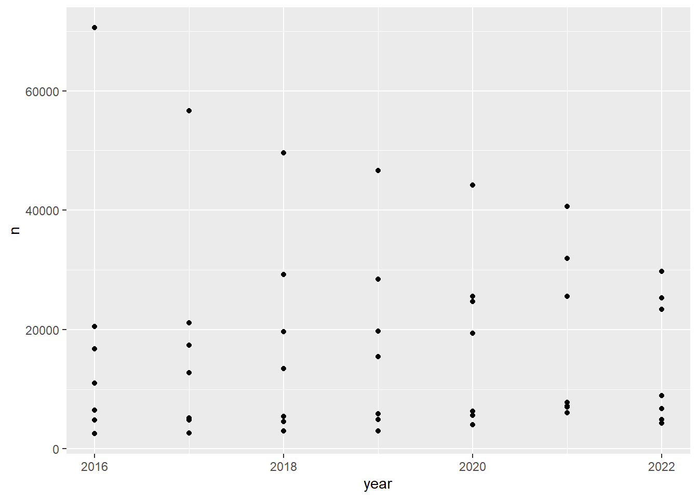
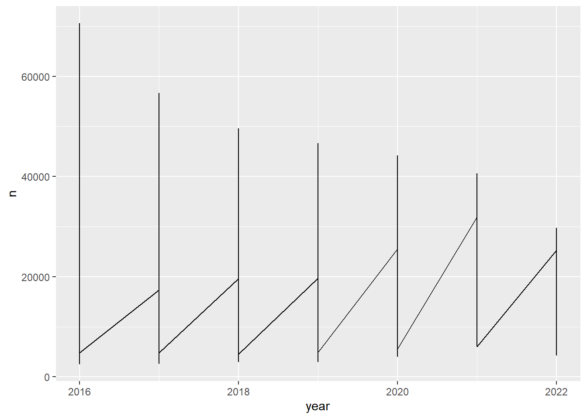
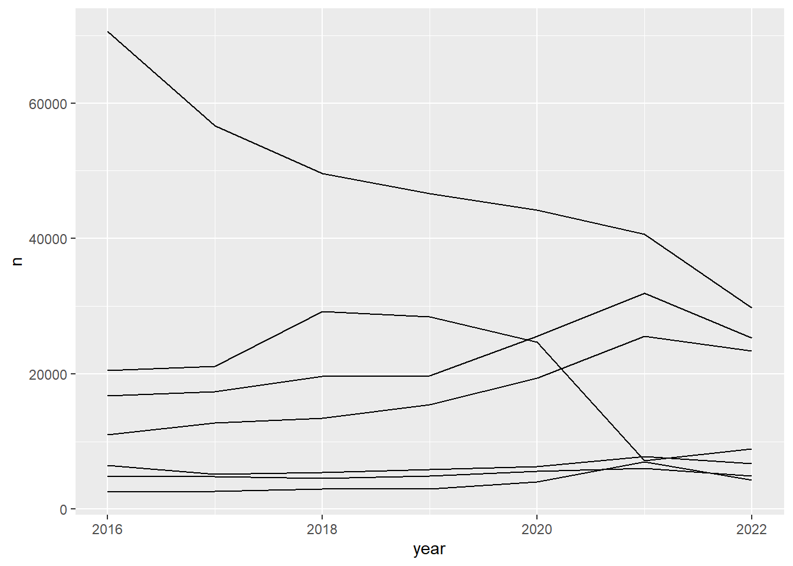
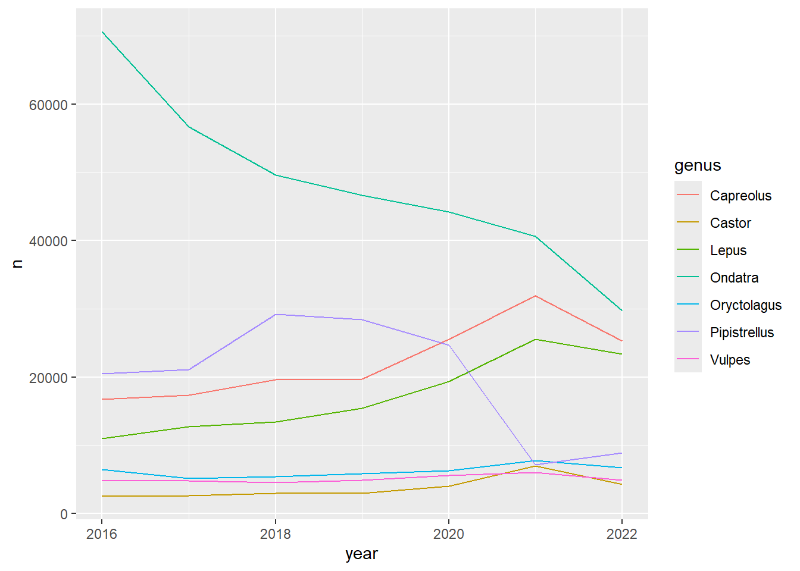
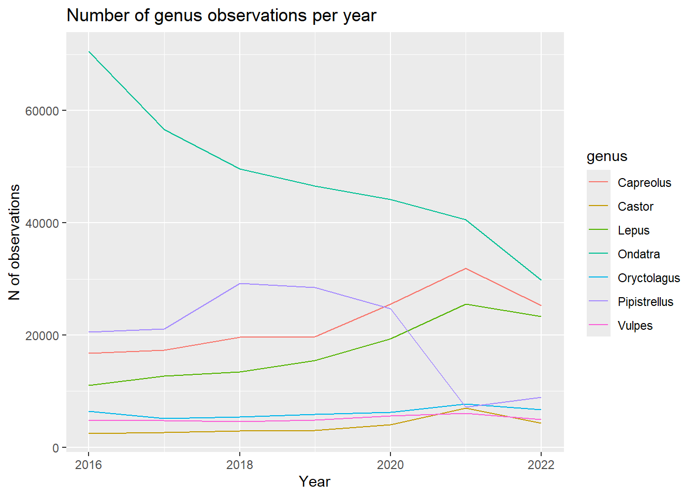

# install packages
install.packages("tidyverse")
install.packages("readr")Simple Assignment SCIENVI201
Timeseries in Ecology
This page will guide you through your compulsory simple assignment conducted in Rstudio.

Most of the collected data in the field of environmental sciences has a temporal structure. This means that the observations made are recorded in a given time interval measured in periods of hours, days, months, years, etc. To give an example; this can be a measurement of sea temperature over the period of decade measured every day.
Understanding time series is an essential skill in the environmental sciences as it enables us to see useful patterns. In this assignment you will visualize the the occurrences of often spotted mammals in the Netherlands over the period of the last six years (2016-2022).
STEP I - RStudio
Open Rstudio and start a new script. To start a new script, click on the File drop down menu on the top left and select New File > R Script. To prevent lost work save the script right away. Again, click on the File drop down menu and select save as.
Now, we can install and load our libraries in our fresh R Script.
In this simple assignment we will be using the following packages.
The next step is to load the libraries in your RStudio, so they are ready to be used.
# load packages
library(tidyverse)
library(readr)STEP II - Data Import
Now, we need to import our data in our Rstudio. Usually, you would download data into your computer first and as a next step, you would load it in RStudio. In this case, our data is readily available on GitHub and can be imported into our RStudio directly from there.
A dataset can be imported into RStudio with the function read_csv(), where in parentheses and quotation marks there is the directory to our data set location. Additionally, in order to save this file in our Rstudio environment (upper right window), we need to assign the file to an object with the assign operator <-.
data <- read_csv("https://raw.githubusercontent.com/ucrdatacenter/projects/main/SCIENVI201/2023h1/ass1/Taxonomy.csv")This data set is retrieved from Global Biodiversity Information Facility (gbif.org), a publicly available database that gathers information on species occurrences. To view your data you can either use the function View() with the name of the data in the parentheses or you can simply click on your data in your environment (upper right window). The data is organized in 2 dimensions; rows (observations) and columns (variables). This type of data structure is called dataframe or datatable.
This particular dataframe, called data, stores information on the taxonomy and the occurrence time (month, year) of often occurring mammals in the Netherlands.
STEP III - Data Manipulation
Now, we would like to visualize number of animals seen over the period of six years. Therefore, what we can do is to count the number of observations (rows) with unique genus values per unique year values. This can be done with the following, the first argument is the name of the dataframe where our variables are stored. The next two are the variables which number of observations we want to count up.
count(data, year, genus)# A tibble: 49 × 3
year genus n
<dbl> <chr> <int>
1 2016 Capreolus 16739
2 2016 Castor 2523
3 2016 Lepus 11040
4 2016 Ondatra 70581
5 2016 Oryctolagus 6486
6 2016 Pipistrellus 20531
7 2016 Vulpes 4846
8 2017 Capreolus 17375
9 2017 Castor 2681
10 2017 Lepus 12762
# ℹ 39 more rowsIn the datatable above, we can see that in the year of 2016 there were 7 unique genusses and there is n of observations which were made per unique species. Additionally, we would like to store this newly created datatable in our environment so we can work with it further. We will use an assignment operator which we have already used a little moment ago. We are going to call our data the yearly_count.
yearly_count <- count(data, year, genus)STEP IV - Visualization
Now, that we have all the necessary information stored, lets see whether we can visualize a graph.
Figures made with ggplot are built from several layers. You always use the same basic code structure to create a wide range of figures:
- The ggplot() function creates a blank canvas for you to work on. The argument data = specifies the dataframe we are working with, where is our data stored.
- Geoms add the visual elements, such as points, lines, bars, or other shapes.
- Other specifications can include changing axis settings, setting the theme, adding labels, etc.
- You connect all these different specifications to each other using + signs.
The variables that you want to display on the graph must always be wrapped in an aes() function, which stands for aesthetics. This specification tells R to determine the value of the aesthetic (x and y axes, colors, groups, line types, etc.) based on the value of the variable. aes() can be specified both in the main ggplot() function (in which case it will apply to all geoms) or within a geom_…() function (then it only applies to that geom).
The following code creates a scatter plot of the yearly counts of genus per year.
ggplot(data = yearly_count) +
geom_point(mapping = aes(x = year, y = n))
Alright, but this scatter plot does not really inform us much. Therefore, lets connect the dots into a line to see the more continuous relationship. The only thing we need to change in our code is the geom. This time, it will be geom_line().
ggplot(data = yearly_count) +
geom_line(mapping = aes(x = year, y = n))
Now, lets think for a second. What are we seeing on the following graph? Why do we see this recurring pattern?
Okay, but we still do not know what are the counts per unique genus. Therefore, we can add another argument, group, to our geom to specify for grouping all n variable into groups of unique genusses.
ggplot(data = yearly_count) +
geom_line(mapping = aes(x = year, y = n, group = genus))
What about changing the color of lines? Totally possible with switching the argument to color.
ggplot(data = yearly_count) +
geom_line(mapping = aes(x = year, y = n, color = genus))
Lastly, we would like to improve the visuals of this graph a little. Let’s define names of our x and y axes and the name of our graph. Do not forget to add the plus sign as that connects our lines of f into one coherent code.
ggplot(data = yearly_count) +
geom_line(mapping = aes(x = year, y = n, color = genus)) +
xlab("Year") +
ylab("N of observations") +
ggtitle("Number of genus observations per year")
STEP V - Recap
Congrats! You finished your simple assignment! Now, please, go to moodle and answer a few questions to conclude on this assignment.
Literature
GBIF.org (30 January 2023) GBIF Occurrence Download https://doi.org/10.15468/dl.kpyjbh